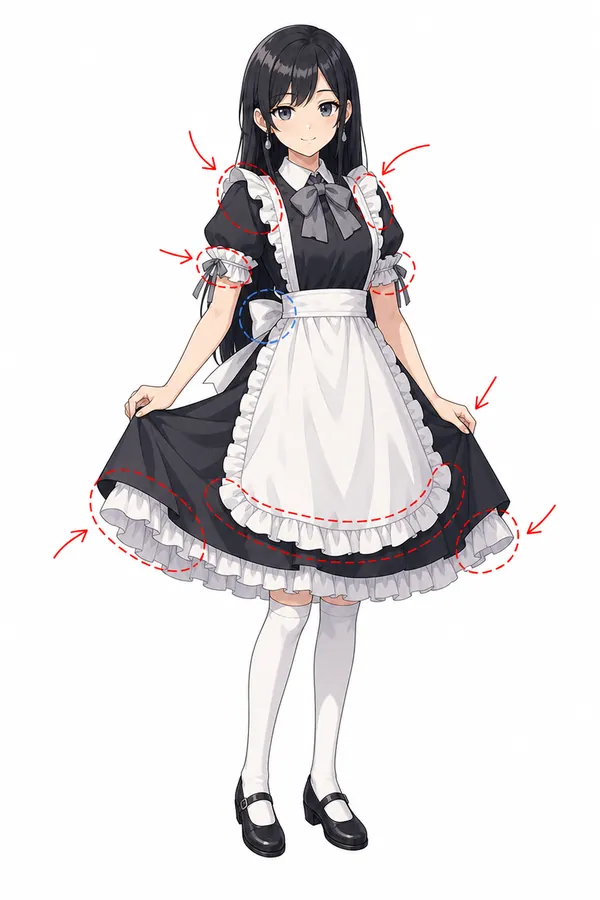
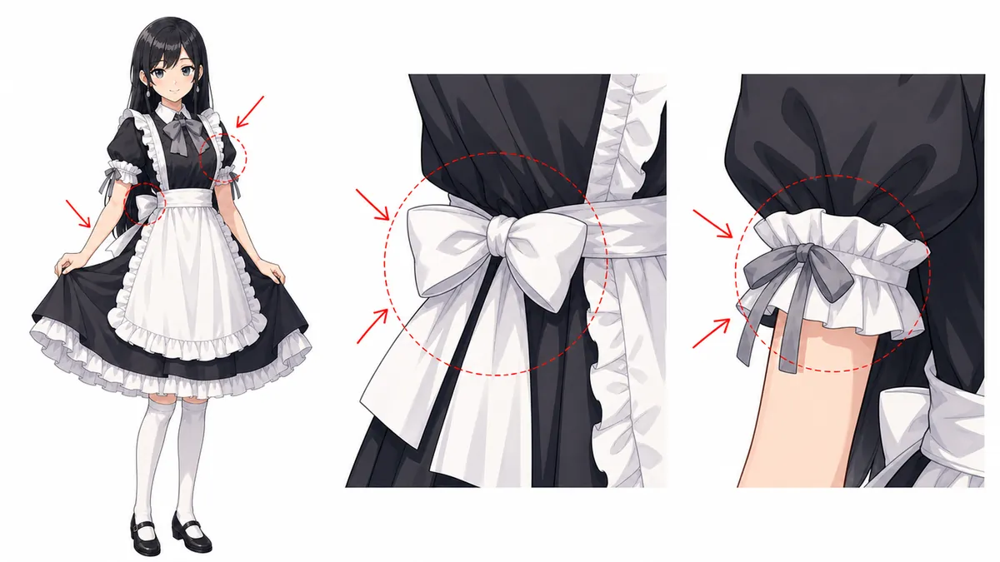
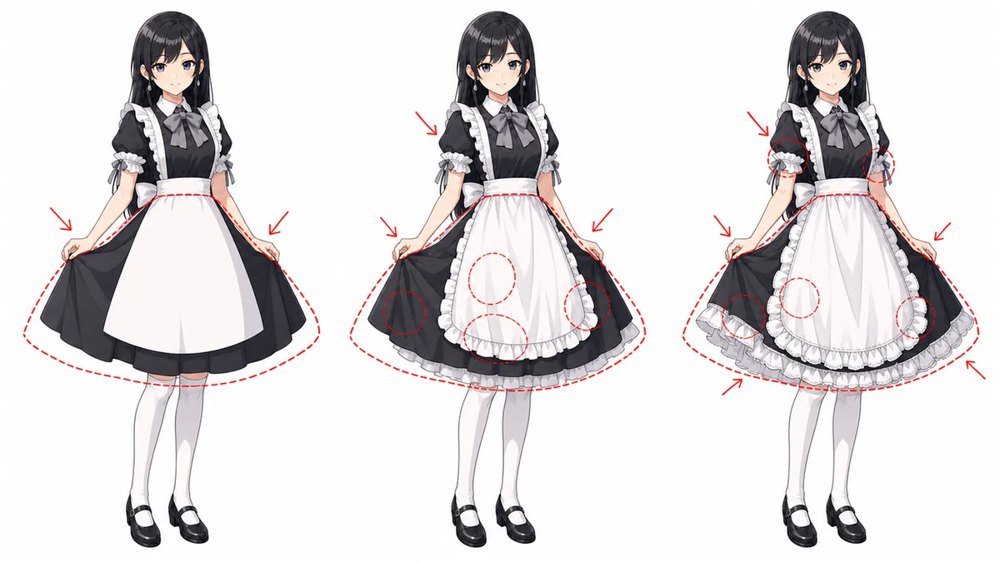
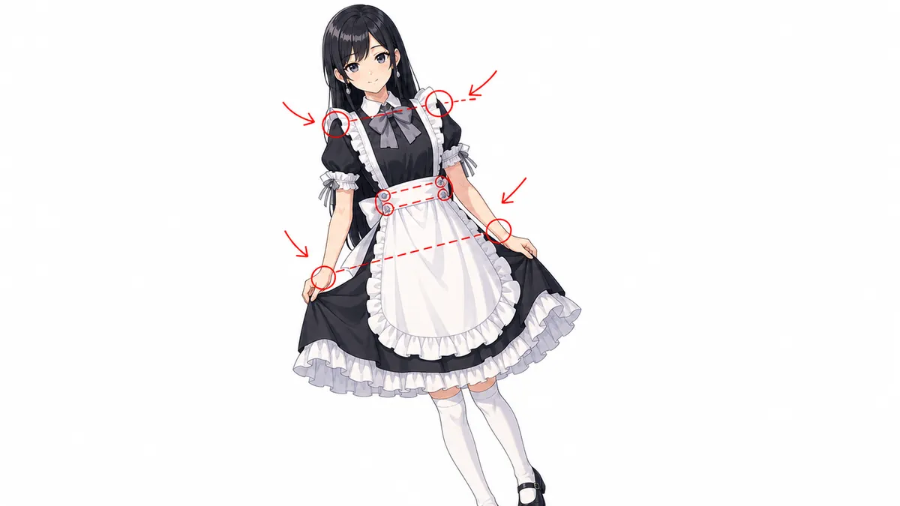
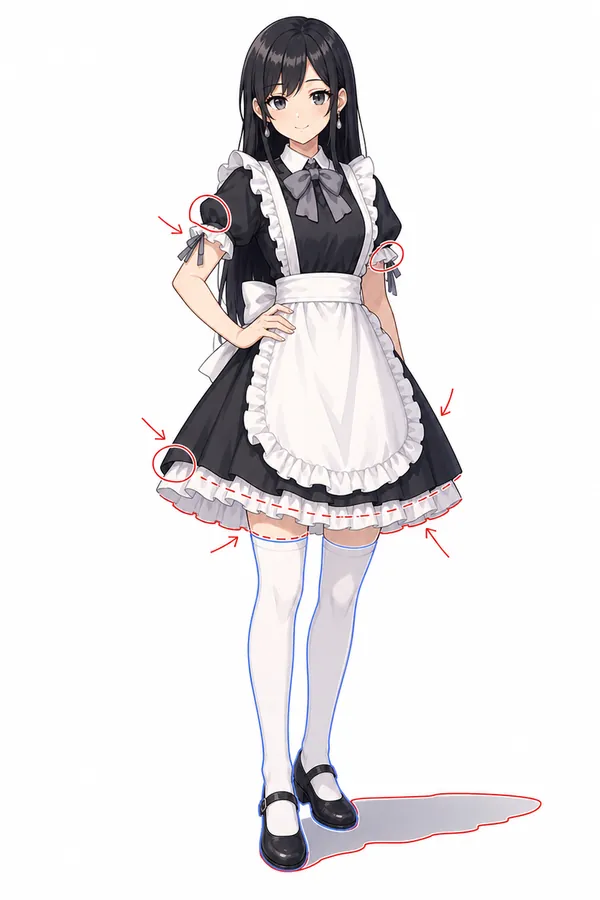

두 번째 모델은 프릴이 많은 메이드복의 시아입니다. 자세 때문에 생긴 주름과 바느질로 만든 주름을 나눠 보는 것부터 시작합니다.
그림 실력·코드·수식을 몰라도 됩니다. 실험을 눌러 보며 따라오세요.
프릴·개더는 긴 천을 짧은 띠에 줄여 꿰맨 '처음부터 만든 주름'입니다. 남는 비율이 물결 깊이를 정합니다

학교 수학으로 보면 — 비와 비율 — 천 길이 ÷ 꿰맨 길이. 물결 하나에 들어가는 천 = 물결 폭 × 비율.
| 식 조각 | 뜻 |
|---|---|
| 천 길이 | 자르기 전 프릴 천의 길이 |
| 꿰맨 길이 | 옷에 붙인 띠의 길이 |
| 물결 폭 | 물결 하나가 차지하는 가로 길이 |


치마 허리 고무줄 부분을 보면 넓은 천이 좁은 고무줄에 모여 촘촘한 주름이 잡혀 있습니다.
3D 옷 제작에서는 프릴을 '긴 천 + 짧은 꿰맨 선'으로 실제로 만들어 천 계산을 돌립니다. 그래야 움직여도 물결이 자연스럽게 따라옵니다.


비율 1이면 남는 천이 없어 물결 깊이가 0이고, 비율이 커질수록 물결이 깊어집니다.
물결 폭을 줄이면 개수가 늘고 하나하나는 얕아집니다. 같은 비율이면 깊이는 폭에 비례합니다.
작업에서는 프릴을 그릴 때 먼저 '남는 천이 많은가'를 정하고, 한 띠 안의 물결 깊이를 고르게 맞춥니다.

AI 그림에서 시아의 앞치마 프릴이 어떤 곳은 깊고 어떤 곳은 거의 평평합니다. 왜 이상할까요?
한 천을 같은 비율로 꿰맸다면 물결 깊이가 대체로 고릅니다. 크게 다르면 일부만 다시 그린 흔적이거나 프릴 구조를 모르는 그림입니다(몸에 눌린 곳은 예외).
허리끈·소매 밴드가 천을 조이면, 조인 선을 향해 위아래 양쪽에서 모임 주름이 생깁니다
운동복 바지 발목 고무단 위로 천이 모여 불룩하게 주름이 쌓입니다.
옷 3D 시뮬레이션에서는 허리끈을 '둘레를 줄이는 고리'로 넣습니다. 그러면 조인 곳 위아래 주름이 저절로 계산됩니다.
조임 0%면 천이 그냥 늘어져 처짐 주름만 조금 생깁니다.
조일수록 조인 선 위아래에 모임 주름이 늘고 깊어집니다. 위쪽 천도 끈을 향해 모입니다.
작업에서는 끈 선을 먼저 긋고, 위아래에서 그 선으로 들어가는 주름을 짧게 넣습니다. 소매 밴드와 발목 고무단도 같습니다.

AI 그림에서 시아의 허리끈 위 상의가 끈 아래 치마와 상관없이 매끈합니다. 무엇이 이상할까요?
끈이 천을 조이면 위쪽 천도 끈을 향해 모입니다. 끈 바로 위에 짧은 모임 주름이 몇 개라도 있어야 자연스럽습니다.
주름 많은 옷은 먼저 큰 윤곽선으로 덩어리를 잡고, 잔물결과 레이스는 마지막에 얹습니다
지도 앱을 확대하면 큰 나라 윤곽이 먼저 보이고, 확대할수록 해안선의 잔굴곡이 나타납니다.
그림 생성 AI(확산 모델)도 잡음 속에서 큰 덩어리를 먼저 잡고 잔무늬를 나중에 그립니다. 그래서 큰 윤곽이 틀린 그림은 잔물결을 아무리 고쳐도 낫지 않습니다(기초편 4부).
단계 1(큰 선)만으로 치마의 종 모양과 기울기가 정해집니다.
단계 2~4는 큰 선을 따라 물결을 더할 뿐, 덩어리 모양은 바꾸지 않습니다.
큰 선이 기울어 있으면 잔물결을 아무리 넣어도 치마가 기울어 보입니다. 작업에서는 큰 선 단계에서 좌우 높이부터 확인합니다.

AI로 시아의 치마 레이스만 '더 자세하게' 다시 그렸더니 치마가 여전히 한쪽으로 기울어 보입니다. 왜일까요?
기울기는 큰 선 단계의 문제입니다. 자세함만 올리는 수정은 큰 덩어리를 그대로 두므로, 큰 윤곽을 먼저 고쳐야 합니다.
좌우 어깨 프릴·단추·앞치마 끈처럼 짝을 이룬 장식은 몸이 기울면 함께 기울고, 짝을 잇는 선끼리는 나란합니다
학교 수학으로 보면 — 삼각비(tan) — 높이 차 = 가로 거리 × tan(기울기).
| 식 조각 | 뜻 |
|---|---|
| 가로 거리 | 두 장식 사이 너비(어깨 프릴이면 어깨너비) |
| 몸의 기울기 | 어깨선이 수평에서 기운 각도 |
| tan | 기울기 비율. tan 10° ≈ 0.18 |
버스에서 몸이 기울면 양쪽 어깨에 멘 가방끈 높이도 함께 기울지만, 두 끈은 여전히 나란합니다.
애니 설정화에서는 어깨선·허리선·밑단선을 가이드 선으로 먼저 그려 둡니다. 장식이 많은 옷일수록 이 선 덕분에 여러 사람이 그려도 짝이 맞습니다.
'몸 따라'로 두면 어깨 프릴·단추·앞치마 끈을 잇는 선이 모두 나란히 기웁니다.
'수평 고정'으로 두면 몸과 장식의 기울기가 달라 장식이 몸에서 떨어져 보입니다.
작업에서는 어깨선·허리선을 먼저 긋고 장식을 그 선에 올립니다. 몸이 돌아 있으면 원기둥 위 고리선(기초편 1부)을 따라 휘게 그립니다.

AI 그림에서 시아의 왼쪽 어깨 프릴이 오른쪽보다 크고 높습니다. 몸은 반듯이 서 있습니다. 어떻게 판단할까요?
몸이 반듯하면 짝 장식은 같은 높이·비슷한 크기여야 합니다(원근 때문에 앞쪽이 조금 커지는 정도는 예외). 크게 다르면 짝을 맞추지 못한 생성 오류입니다.
앞치마·프릴 아래에는 떨어지는 그림자와 입체 그림자가 겹치고, 치마는 다리 위에 물결 모양 그림자를 드리웁니다
학교 수학으로 보면 — 삼각비(tan) — 1부 5단계와 같은 직각삼각형입니다.
| 식 조각 | 뜻 |
|---|---|
| 치마~다리 거리 | 부푼 치마 밑단이 다리 피부에서 떨어진 거리 |
| 빛이 면과 이루는 각 | 머리 위 빛이면 세로로 선 다리를 스치므로 각이 작다 |
| tan | tan 30° ≈ 0.58, tan 60° ≈ 1.73 |
처마 밑 벽에는 처마가 드리운 그림자와, 벽의 울퉁불퉁한 돌이 만든 그림자가 함께 있습니다.
애니 채색에서는 두 그림자를 같은 색으로 칠하더라도, 떨어지는 그림자 가장자리는 위 천의 물결 모양을 따라 들쭉날쭉하게 자릅니다. 렌더링에서는 두 그림자를 서로 다른 층으로 계산합니다.
떨어지는 그림자만 켜면 다리 위에 프릴 물결 모양 그림자가 생깁니다. 거리가 멀수록, 각이 작을수록 길어집니다.
입체 그림자만 켜면 다리 원기둥의 빛 반대쪽만 어둡습니다. 둘을 함께 켜면 겹친 곳이 생깁니다.
작업에서는 같은 색으로 칠하더라도 경계 모양으로 주인을 구별합니다. 떨어지는 그림자는 위 천의 윤곽을, 입체 그림자는 몸의 둥근 윤곽을 따릅니다.

AI 그림에서 시아의 치마가 다리에 드리운 그림자의 끝이 자로 그은 듯 반듯합니다. 치마 밑단은 프릴입니다. 어떻게 볼까요?
떨어지는 그림자는 가린 물체의 윤곽을 닮습니다. 프릴 밑단이면 그림자 끝도 물결져야 자연스럽습니다.

| 항목 | 주판봇 | 초파리 |
|---|---|---|
| 닮음(외형 고정값) | 7 | 8 |
| 입체감(섞인 그림자) | 4 | 8 |
| 자연스러움(덩어리·짝 장식) | 3 | 8 |
| 합계 | 14 | 24 |


점수는 이야기 속 예시입니다. 실제 그림을 평가한 값이 아닙니다.
| 주제 | 한 줄 | 작업에서는 |
|---|---|---|
| 만든 주름 | 물결에 든 천 = 폭 × 비율 | 비율로 깊이 정하기 |
| 조임 | 조인 선 위아래로 모인다 | 끈 선 먼저 긋기 |
| 큰 선 먼저 | 덩어리 → 물결 → 레이스 | 기울기는 큰 선에서 |
| 짝 장식 | 높이 차 = 거리 × tan | 가로 기준선에 올리기 |
| 섞인 그림자 | 길이 = 거리 ÷ tan | 그림자 주인으로 경계 모양 |

이 페이지에 나온 개념·방법·비유·쓰임을 모았습니다. 검색하고, "설명 보러 가기"로 본문에 돌아갑니다.
지식 색인을 출처와 함께 파일로 내려받습니다. 서지 관리는 BibTeX·RIS, 온톨로지 편집은 Turtle, 그래프 도구는 CSV, 여러 페이지 합치기는 kg.json입니다.